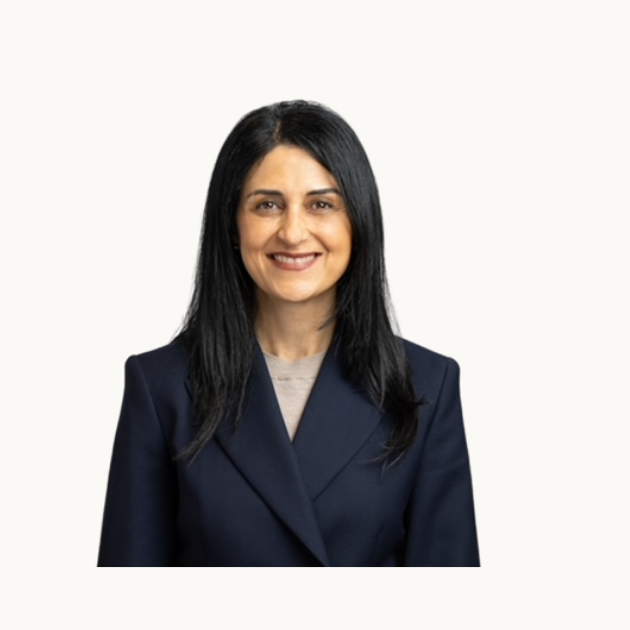

About
Esse Quam
Videri
EQV Group is an Australian company built on the Latin principle esse quam videri, meaning to be, rather than to seem to be. Everything we build is grounded in substance: research-backed, honestly made, and built to work, not just to impress.
Get in touchFounder
Luke Waked
Founder
Luke Waked is the founder of EQV Group. Alongside growing EQV, he works as a Research Assistant in the Faculty of Arts and School of Education at Macquarie University, researching how disruptive technology — particularly AI — can be integrated effectively into education.
He has co-authored courses for the Macquarie University Teachers' Learning Hub, including Generative AI for Educators: AI Literacy & Prompting Skills, and has contributed to peer-reviewed articles.
His collaboration with academics and his research in AI, together with time spent in the classroom tutoring secondary school students, sparked a curiosity in the potential role AI-powered tools can play in:
- Improving student performance and helping them take more control of their learning.
- Supporting teachers to monitor progress and identify learning gaps in real time.
He holds a Bachelor of Arts in International Relations and Politics from Macquarie University.
Board of Advisors

Jackie Daher
Advisor
Jackie Daher is the founder of SoProductive and a commercial strategist with more than 20 years' experience helping organisations grow, innovate and navigate change.
After 18 years with American Express, where she led Client Acquisition and Partnerships for Global Merchant Services Australia, Jackie now works with businesses to unlock growth through practical AI adoption, stronger sales strategies, process improvement and customer-focused innovation.
She holds a Bachelor of Economics and Business Finance from Macquarie University and has completed the Leadership Excellence Program through Harvard Business School.
Jackie is an experienced mentor who enjoys helping founders, emerging leaders and teams build confidence, think strategically and achieve their potential — known for her collaborative style, commercial insight and ability to connect strategy with execution.
Rigor over hype
Evidence tells us what works. The people we work with tell us what's real.
Connection, not automation
Technology should bring people closer together, not further apart.
Be, not seem
Esse quam videri. Substance first, presentation second.